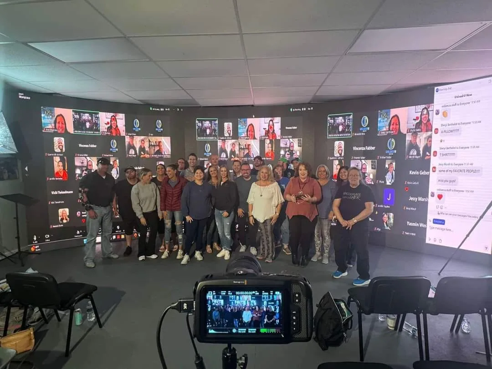

Host · Let Glory Shine
The Power Within Ascends
Martha hosts a weekly show featuring survivor stories, healing tools, thought leaders, guest healers, and conversations about freedom, restoration, and identity reclamation.
Explore the show →Author · guest · courageous storyteller

Amazon bestselling international author
Cult Survivor to Courageous Warrior
Martha tells the deeply personal story of growing up inside a cult, escaping at 25, confronting the trauma that followed, and intentionally choosing the long road back to identity, self-worth, faith, and purpose.
“Our trauma doesn’t have to define us. We get to rewrite our story at any time.”
Featured conversation
Host · Let Glory Shine
Martha hosts a weekly show featuring survivor stories, healing tools, thought leaders, guest healers, and conversations about freedom, restoration, and identity reclamation.
Explore the show →
Journey’s Dream
Martha discusses the book, escaping at 25, the mind-body impact of trauma, nervous-system regulation, spirituality, mirror work, and the ongoing nature of healing.
Watch or listen →
Invite Martha
Martha is available for thoughtful conversations about cult recovery, trauma, identity, somatic healing, faith after harm, community, and choosing a new story.
Request an interview →Core message
The book’s central invitation is both simple and demanding: the past may shape us, but it does not have to define us.
Martha’s story does not offer a quick-fix version of healing. It honors the body, the nervous system, grief, spirituality, self-kindness, and the intentional choices that make a new chapter possible.
For readers carrying secrecy, shame, fear, or the belief that no one could understand, Glory offers language, companionship, and a courageous example of going all in.
Media + speaking requests